PowerScale — Procedures¶
Before you begin¶
- Access: Storage admin credentials (cluster admin or equivalent)
- Timing: safe to run during business hours unless a step is marked ⚠ (causes interruption)
- Dependencies: no active upgrades or migrations on the same infrastructure
- Logging: capture command output — paste into the change record on completion
Change Readiness¶
Verify these items before performing any change on a PowerScale cluster — node additions, OneFS upgrades, SyncIQ policy changes, or quota modifications.
- [ ]
isi statusis clean — no SMARTFAIL nodes, no DOWN nodes, no unacknowledged drive faults - [ ] SyncIQ policies are in a successful or idle state —
isi sync policies listshows no policies in ERROR; pause scheduled policies during the change window if needed - [ ] Quota headroom confirmed —
isi quota quotas listshows no directories at or above hard threshold before the change - [ ] No active cluster jobs that would conflict:
isi job list— Restripe, MultiScan, and FSAnalyze should not be running during major changes - [ ] Snapshot reserve space is within limits —
isi snapshot listconfirms no unexpected snapshot accumulation consuming pool headroom - [ ] Confirm OneFS version is within the supported upgrade path if this is a software change (Dell upgrade compatibility matrix)
- [ ] Inform NFS and SMB client teams of the change window; confirm application quiesce plan if node-level work is planned
- [ ] If removing or SmartFailing a node, confirm the cluster has sufficient capacity to absorb the restripe
| Item | Status | Notes |
|---|---|---|
| isi status clean (no SMARTFAIL / DOWN) | ||
| SyncIQ policies idle or paused | ||
| No active conflicting cluster jobs | ||
| Quota headroom confirmed | ||
| Snapshot reserve within limits |
Maintenance Window¶
flowchart TD
A([Start Maintenance]) --> B["Notify NFS/SMB client teams"]
B --> C{"isi status clean?"}
C -->|No| D["Resolve faults first"]
D --> C
C -->|Yes| E["Pause SyncIQ policies"]
E --> F["Check capacity headroom\n< 80% in isi storagepool"]
F --> G{"Node SmartFail?"}
G -->|Yes| H["isi devices node smartfail LNN\nMonitor Restripe job"]
G -->|No| I["Perform change per runbook"]
H --> I
I --> J["isi status — all nodes ONLINE?"]
J -->|No| K["Investigate & resolve"]
K --> J
J -->|Yes| L["Re-enable SyncIQ policies\nTrigger manual run → confirm SUCCESS"]
L --> M([Close Window])Steps for planned maintenance on a PowerScale cluster — node SmartFail, OneFS upgrade, or network reconfiguration.
- Notify NFS and SMB client teams; confirm the maintenance window and coordinate any application quiesce if node-level work is planned
- Confirm
isi statusis clean — no SMARTFAIL, no DOWN nodes, no unresolved drive faults before starting - Pause all SyncIQ scheduled policies to prevent replication from running during the change:
isi sync policies modify <name> --enabled falsefor each active policy - If adding or removing a node, confirm the cluster has sufficient capacity headroom in
isi storagepool listto absorb the restripe without crossing 80% used - To SmartFail a node for planned maintenance:
isi devices node smartfail <node-lnn>— monitor Restripe job progress inisi job listuntil complete before physically servicing the node - Perform the change per the approved runbook
- After the change, run
isi statusto confirm all nodes are back ONLINE and drive health is clean - Re-enable SyncIQ policies:
isi sync policies modify <name> --enabled true; trigger a manual run withisi sync policies run <name>and confirm SUCCESS before closing the window
Post-Change Validation¶
Run these checks after any change to confirm the cluster is healthy and client services have resumed normally.
- [ ]
isi status— all nodes ONLINE, no SMARTFAIL, no DOWN, no drive faults introduced by the change - [ ]
isi storagepool list— all pools and tiers below 80% used; Restripe job completed if a node was added or removed - [ ]
isi sync policies list— all SyncIQ policies re-enabled and showing a successful run after the change - [ ]
isi event list --limit 20— no new CRITICAL events introduced by the change - [ ] NFS and SMB client connectivity verified from at least one representative client per access zone
- [ ] Snapshot schedules running as expected:
isi snapshot schedules list - [ ] Quota thresholds intact:
isi quota quotas listshows no unexpected threshold exceedances introduced by the change - [ ] CloudIQ or InsightIQ shows no new performance anomalies in the post-change window
NFS Export Management¶
# List all exports
isi nfs exports list
isi nfs exports list -v
# View a specific export
isi nfs exports view <export_id>
# Create an export
isi nfs exports create /ifs/data/myshare \
--clients 10.0.0.0/24 \
--read-write-clients 10.0.0.0/24 \
--root-clients 10.0.1.5 \
--description "Application data share"
# Modify an existing export
isi nfs exports modify <export_id> --addread-write-clients 10.0.2.0/24
isi nfs exports modify <export_id> --description "Updated description"
# Delete an export
isi nfs exports delete <export_id>
# Validate all exports for errors
isi nfs exports check
Export Client Access Levels¶
| Client Type | Permission |
|---|---|
--clients |
Read-only access |
--read-write-clients |
Read/write access |
--root-clients |
Root access (uid 0 not squashed) |
NFS Zones (Access Zones)¶
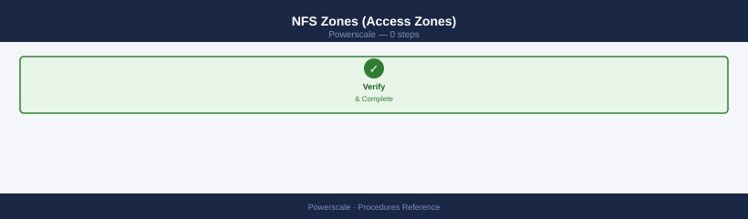
# List access zones
isi zones list
# Create export in a specific access zone
isi nfs exports create /ifs/zone1/data \
--zone Zone1 \
--read-write-clients 10.1.0.0/24
# List exports by access zone
isi nfs exports list --zone Zone1
Troubleshooting NFS¶
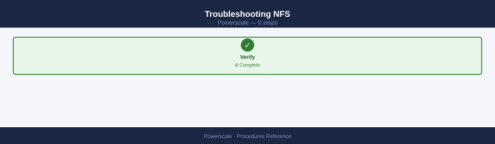
# Check mount errors from client side (Linux)
showmount -e <powerscale-ip>
mount -t nfs <ip>:/ifs/data/share /mnt/test
dmesg | grep nfs | tail -10
# Check NFS stats on the cluster
isi statistics protocol list --protocol nfs3
isi statistics protocol list --protocol nfs4
# Check for NFS errors in events
isi event events list | grep -i nfs
# Verify export path exists
isi quota quotas list --path /ifs/data/share
ls -la /ifs/data/share # (from cluster shell)
SMB Share Management¶
# List all SMB shares
isi smb shares list
isi smb shares list -v
# View a specific share
isi smb shares view <share_name>
# Create a share
isi smb shares create <share_name> /ifs/data/project1 \
--description "Project 1 share" \
--browsable yes \
--allow-execute-always yes
# Modify a share
isi smb shares modify <share_name> --description "Updated description"
isi smb shares modify <share_name> --add-permissions 'user:<username>:allow:full'
# Delete a share
isi smb shares delete <share_name>
SMB Permissions¶
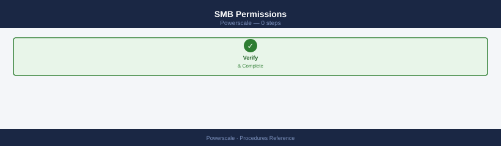
# View share permissions (ACL)
isi smb shares view <share_name> | grep -A 20 "Permission"
# Add a user with read permission
isi smb shares modify <share_name> \
--add-permissions 'user:CORP\jsmith:allow:read'
# Add a group with change permission
isi smb shares modify <share_name> \
--add-permissions 'group:CORP\fileusers:allow:change'
# Set full control for an admin group
isi smb shares modify <share_name> \
--add-permissions 'group:CORP\storeadmins:allow:full'
# Remove a permission entry
isi smb shares modify <share_name> \
--remove-permissions 'user:CORP\jsmith:allow:read'
SMB Sessions and Open Files¶
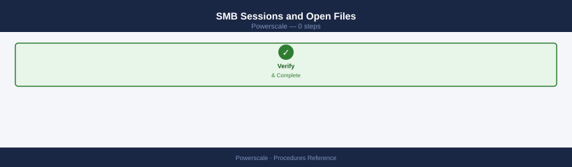
# Active SMB sessions
isi smb sessions list
# Open files per session
isi smb openfiles list
# Disconnect a specific session
isi smb sessions delete <session_id>
Troubleshooting SMB¶
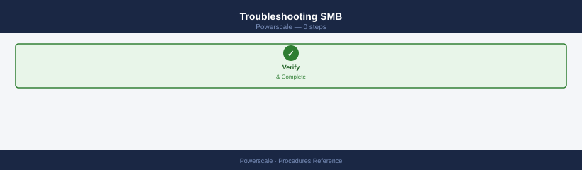
# Check SMB protocol stats
isi statistics protocol list --protocol smb2
isi statistics protocol list --protocol smb3
# Check for SMB errors in events
isi event events list | grep -i smb
# Verify AD authentication is working
isi auth status | grep -i "Active Directory\|joined"
isi auth ads list
# Check group memberships resolve correctly
isi auth users view <username>
isi auth groups view <groupname>
# Test access zone authentication
isi zone zones view <zone_name>
Snapshot Management¶
# Create a snapshot of a directory
isi snapshot snapshots create /ifs/data/project1 --name project1-$(date +%Y%m%d)
# List all snapshots
isi snapshot snapshots list
isi snapshot snapshots list -v
# View details of a snapshot
isi snapshot snapshots view <snap_id>
# Delete a snapshot
isi snapshot snapshots delete <snap_id>
# Delete by name
isi snapshot snapshots delete --name project1-20260101
Snapshot Schedules¶
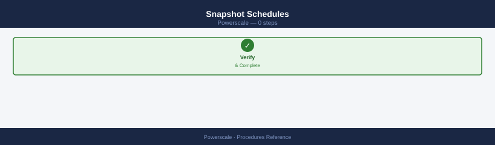
# List all schedules
isi snapshot schedules list
# Create a daily schedule retaining 14 snapshots
isi snapshot schedules create daily-project1 \
/ifs/data/project1 \
--schedule "every 1 days at 00:00" \
--retention 2W \
--alias latest-project1
# Modify a schedule
isi snapshot schedules modify <schedule_name> --retention 1M
# Delete a schedule (does not delete existing snapshots)
isi snapshot schedules delete <schedule_name>
Recovering Files from a Snapshot¶
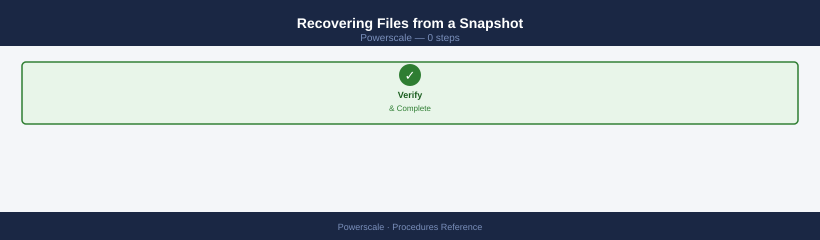
# Copy a specific file from snapshot back to live filesystem
cp -p /ifs/data/project1/.snapshot/project1-20260101/report.xlsx \
/ifs/data/project1/report.xlsx
# Restore an entire directory
rsync -av /ifs/data/project1/.snapshot/project1-20260101/ \
/ifs/data/project1/
# Restore via SnapshotIQ revert (rolls back entire path to snapshot state)
isi snapshot snapshots modify <snap_id> --set-expiration never # Protect before reverting
isi snapshot snapshots revert <snap_id>
# WARNING: revert is destructive — all data written after the snapshot is lost
SmartConnect Zone Configuration¶
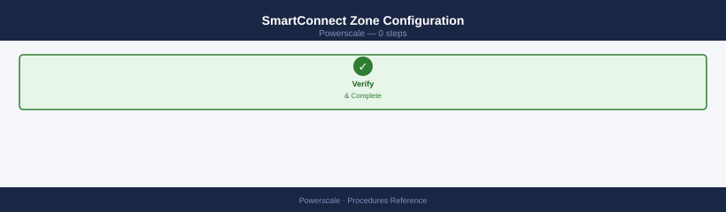
SmartConnect zones distribute NFS and SMB client connections across node pools using DNS-based load balancing.
# Create an IP pool with a SmartConnect DNS zone and round-robin load balancing
isi network pools create \
--name=pool1 \
--subnet=subnet0 \
--ifaces=1:ext-1 \
--sc-dns-zone=pool1.cluster.domain.com \
--sc-load-balance-policy=round_robin
# Verify the pool configuration
isi network pools view pool1
Delegate the SmartConnect zone FQDN (pool1.cluster.domain.com) in your DNS infrastructure to the cluster's SmartConnect service IP. Test: nslookup pool1.cluster.domain.com — it should return multiple node IPs in rotation across successive lookups.
SmartQuotas — Create and Monitor Quotas¶
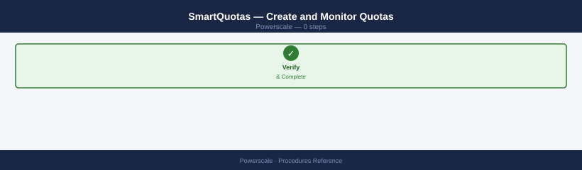
Set hard and soft limits on directories, users, or groups to control storage consumption.
# Create a directory quota with hard, soft, and advisory thresholds
isi quota quotas create \
--path=/ifs/data/project1 \
--type=directory \
--hard-threshold=10T \
--soft-threshold=8T \
--soft-grace=7D \
--advisory-threshold=9T
# List all active quotas
isi quota quotas list
# Generate a quota usage report
isi quota reports create
isi quota reports list
Quota events appear in isi event events list when thresholds are crossed. Review reports regularly and adjust thresholds before directories approach the hard limit.
SyncIQ — Configure Replication Policy¶
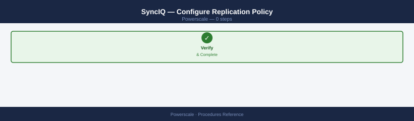
Set up asynchronous replication from this cluster to a remote PowerScale cluster for DR.
# Create a SyncIQ replication policy
isi sync policies create \
--name=DR-Policy \
--action=sync \
--source-root=/ifs/data \
--target-host=<remote-cluster-ip> \
--target-path=/ifs/data-replica \
--schedule="every 1 hours"
# Trigger an immediate manual run
isi sync policies run DR-Policy
# Monitor replication job progress
isi sync jobs list
Confirm the job completes with status SUCCESS. Check isi sync reports list --policy=DR-Policy for transfer statistics and any errors from previous runs.
SyncIQ — Failover and Failback¶
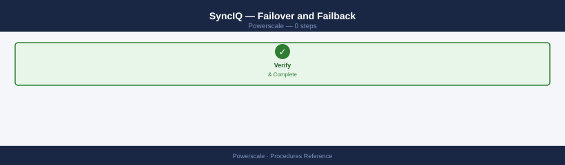
Promote the replica to writable on a DR event, then re-establish replication when the primary recovers.
# --- FAILOVER (run on the TARGET / DR cluster) ---
# Allow writes to the replica — breaks the replication relationship
isi sync recovery allow-write --policy=DR-Policy
# Update client mount points and DNS to point to the target cluster
# --- FAILBACK (run when primary cluster is recovered) ---
# On the TARGET cluster: prepare the replica for resync back to the primary
isi sync recovery resync-prep --policy=DR-Policy
# On the TARGET cluster: commit the resync and re-establish original direction
isi sync recovery commit --policy=DR-Policy
# Verify replication is active again
isi sync policies list
After failback, trigger a manual run with isi sync policies run DR-Policy and confirm SUCCESS before updating client mount points back to the primary cluster.
Access Zone Management¶
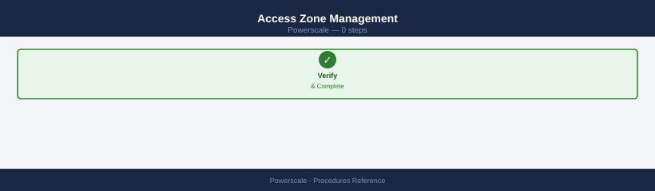
Access zones isolate client namespaces and authentication providers, enabling multi-tenancy on a single cluster.
# Create a new access zone with a dedicated root path
isi zone zones create --name=Zone-DMZ --path=/ifs/dmz --create-path
# Add an authentication provider to the zone
isi zone zones modify Zone-DMZ --add-auth-providers=lsa-local-provider:System
# View the zone configuration
isi zone zones view Zone-DMZ
After creating the zone, create a dedicated IP pool and SmartConnect zone scoped to Zone-DMZ so that clients connecting to the zone's IP are isolated from other zones. Verify NFS exports and SMB shares in the zone are reachable from the correct client subnet.
Node Pool and Tier Management¶
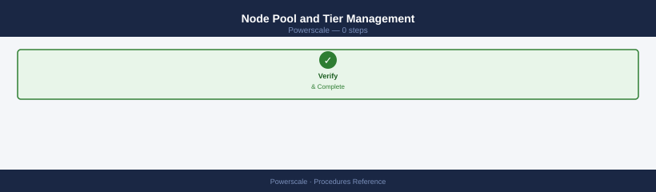
Assign nodes to pools and configure file pool policies to place data on appropriate performance tiers.
# List existing node pools and their assigned nodes
isi storagepool nodepools list
# Assign specific nodes (by logical node number) to a pool
isi storagepool nodepools modify <pool-name> --lnns=1,2,3
# Create a file pool policy to direct archive data to a capacity tier
isi filepool policies create \
--name=Archive \
--apply-data-storage-target=capacity-pool1 \
--file-matching-criteria="accessed > 90 days"
# Verify overall storage pool health and tier usage
isi storagepool health
Run isi job list after modifying pool assignments — a Restripe job will start automatically to redistribute data. Monitor it to completion before making further pool changes.
Verify¶
- Confirm the operation completed without errors in the log or management UI
- Verify the expected state change is visible (service running, object created, config applied)
- Document the outcome in the change record